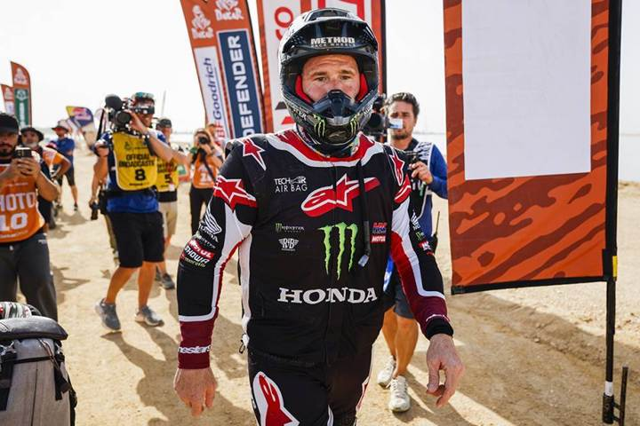
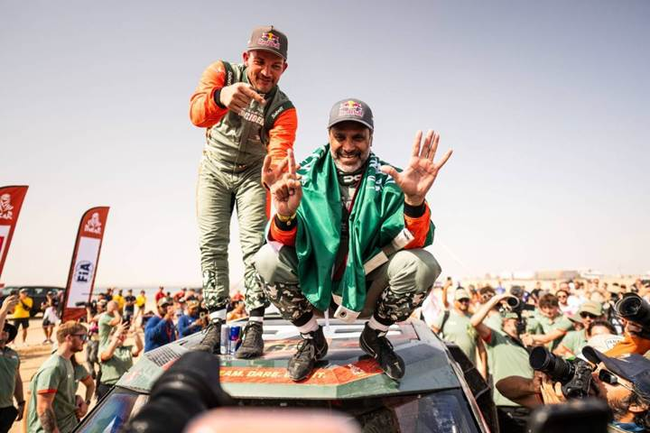
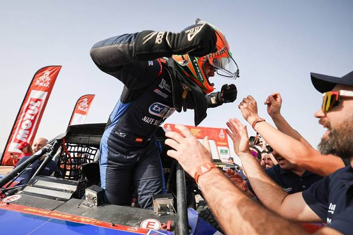
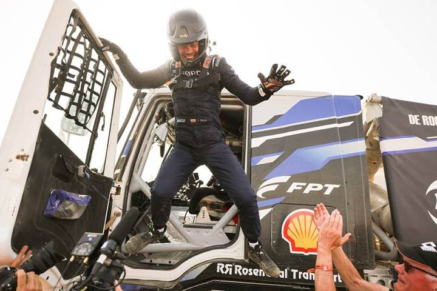
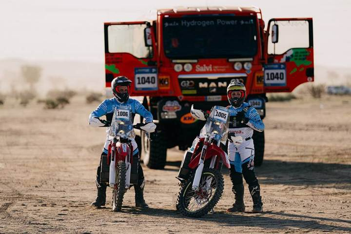

La última etapa del Dakar 2026 ha dado pie a un escenario sin precedentes en motos. Luciano Benavides ha derrotado a Ricky Brabec por una diferencia récord de solo 2 segundos, algo nunca visto en la historia del rally. El desenlace se produjo tras una remontada épica debida a un error de navegación de Brabec a menos de 7 kilómetros de la meta.
La alegría es total en el clan Red Bull KTM Factory Racing, mientras que el piloto estadounidense de Monster Energy Honda HRC acepta su derrota con amargura y dignidad. El piloto argentino gana el primer Dakar de su carrera y acompaña en el palmarés a su hermano Kevin.

Coches: El Sexto de Nasser y la gloria de Dacia
En la categoría de coches, Nasser Al Attiyah ha vuelto a hacer historia al ganar el Dakar por sexta vez. Esta victoria le permite distanciarse de Ari Vatanen y acercarse al récord de Stéphane Peterhansel. Además, brinda a Dacia su primera victoria en la prueba.


Nasser se impuso por delante de los dos Ford Raptor de Nani Roma y Mattias Ekström, mientras que Sébastien Loeb finalizó en cuarta posición en la clasificación final.
Challenger y SSV: Dominio Estadounidense y Español
En la categoría Challenger, Kevin Benavides ganó la última etapa, pero el título absoluto fue para Pau Navarro, con 23 minutos de ventaja. En SSV, el Polaris de Brock Heger revalidó el título con una hora de ventaja sobre Kyle Chaney.

Camiones: La hazaña de Vaidotas Zala
Vaidotas Zala logró otra hazaña al ganar en camiones con solo dos años de experiencia en la categoría. El lituano se impuso a leyendas como Ales Loprais y Mitch van den Brink.

Dakar Future: Misión 1000
El camión KH7-Ecovergy de Jordi Juvanteny se llevó su tercera victoria en su categoría, mientras que la moto eléctrica de Fran Gómez Pallas se impuso en las dos ruedas.

En total, 247 vehículos de los 317 que tomaron la salida llegaron a la meta en Yanbu, cerrando una de las ediciones más ajustadas y tecnológicamente avanzadas de la historia.
Fuente: www.dakar.com